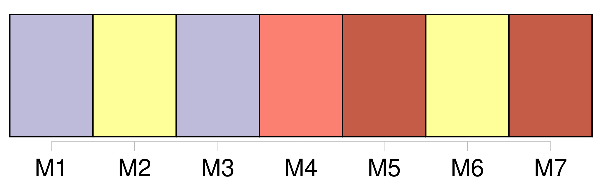
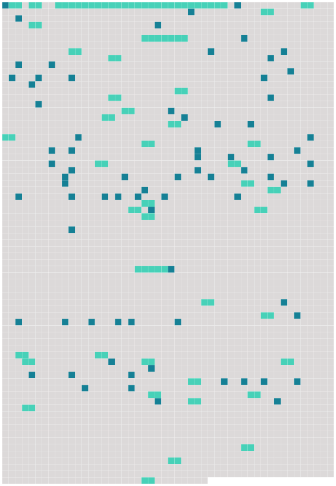

Longueur nb maillons : 118 mentions |
 |
[Girafe] [Son] nom commun vient de l'arabe zarāfah, mais [l'animal] fut anciennement appelé camélopard, du latin camelopardus, contraction de camelus ( chameau ) en raison du long cou et de pardus ( léopard ) en raison des taches recouvrant [son] corps.
Après des millions d'années d'évolution, [la girafe] a acquis une anatomie unique avec un cou particulièrement allongé qui [lui] permet notamment de brouter la cime des arbres. [1 phrases] Cependant la taxonomie [des girafes] est actuellement débattue parmi les scientifiques. Ainsi, en 2007, une étude moléculaire extensive de [girafes] confirme la différenciation génétique très nette d'au moins six populations. [3 phrases]
Description [2 phrases] [Les girafes] dorment très peu, moins de 2 heures pour 24 heures, et plus volontiers le jour, car [elles] peuvent continuer à surveiller l'horizon. En réalité, [elles] somnolent debout, les yeux grands ouverts et sur des périodes allant de 1 à 30 minutes d'affilée. Le poids d' [une girafe] varie entre 750 et 1 100 kg pour les femelles et peut aller jusqu’ à 2 000 kg pour les mâles. [Son] pelage à dominante rousse est réticulé ou tacheté de jaune ; [son] ventre est blanc.
[Sa] queue, mince et longue, terminée par un pinceau de poils noirs, mesure de 70 cm à 100 cm. [3 phrases] [Ses] caractéristiques physiques, notamment la longueur de [ses] membres et de [son] cou, font qu' [elle] est considérée par la NASA comme le modèle idéal pour étudier l'effet de la gravité sur la circulation sanguine.
Les phlébologues de la NASA ont copié [son] réseau sanguin pour réaliser la combinaison anti-G des pilotes de chasse et astronautes. [Son] cœur de 11 kg, au myocarde renforcé, pompe 60 litres de sang et bat à 170 pulsations par minute, ce qui donne une pression artérielle deux fois supérieure à la pression humaine. [2 phrases] Lorsque [l'animal] baisse la tête au sol, les valvules de la jugulaire sont fonctionnelles et empêchent le sang de retomber vers le cerveau ( ce qui conduirait à un « voile rouge » ). La veine jugulaire de [la girafe] est la plus longue et la plus droite du monde animal et possède 9 valvules. En 1993, à Vincennes, [son] endoscopie confirma que les constituants anatomiques d'une veine sont orientés en fonction de [son] axe d'aplatissement et donc qu'une veine a bien deux faces et deux bords. [1 phrases] Contrairement à une idée répandue, [les girafes] possèdent des cordes vocales mais [elles] n'émettent que très rarement des sons, se reposant davantage sur la vision que sur l'audition pour communiquer via par exemple des postures et des mouvements du cou et de la tête. Dans l'obscurité, [les girafes] ont tout de même recours à une communication orale, [elles] produisent un bruit sourd, une sorte de bourdonnement autour de 92 Hz, c'est-à-dire à la limite de la perception humaine. [1 phrases]
[La girafe] est le seul mammifère terrestre [qui] ne bâille pas. [Son] espérance de vie serait de l'ordre de 10 à 15 ans ou de 26 ans en milieu sauvage ( selon les sources ), et de 27 à plus de 36 ans en captivité. [1 phrases]
Répartition géographique On [la] trouve du Tchad jusqu'en Afrique du Sud. [1 phrases] [Elle] était aussi présente en Afrique Australe ( Angola, Botswana, Malawi, Mozambique, Namibie, Swaziland, Zambie, Zimbabwe ). [Les girafes] ont disparu de la plupart des pays de l'Afrique de l'Ouest.
[L'espèce] a été réintroduite en Afrique du Sud pour les réserves de chasse.
Écologie et comportement En vitesse de croisière, [elle] court à 15 km / h mais peut accélérer à 56 km / h en prenant un curieux galop.
Les pattes avant se lèvent ensemble mais largement écartées, ce qui évite que [ses] sabots s'entrechoquent.
[Son] galop particulier est facilité par [son] long cou qui balance et crée l'équilibre, grâce à un petit muscle spécial qui [le] tire en avant.
Régime alimentaire [Elle] peut occasionnellement se nourrir de fleurs, fruits, graines ou cosses. [Sa] consommation quotidienne va de 7 kg ( nourriture rare ) à 70 kg ( nourriture abondante ). [Elle] ne se nourrit ou ne s' [abreuve] au sol qu'en écartant les pattes de devant ou en pliant les genoux, après avoir bien inspecté les alentours.
[Elle] lève souvent la tête entre deux gorgées lorsqu' [elle] est dans cette posture périlleuse, mais [elle] trouve l'essentiel de [ses] besoins en eau dans la nourriture et ne [va] boire que tous les 1 à 2 jours. Les acacias de la savane ont atteint des tailles [leur] permettant d'échapper aux zèbres et aux antilopes, mais leurs feuilles les plus tendres poussent entre 2 et 6 mètres, ce qui constitue pour [la girafe] la hauteur idéale et [sa] niche alimentaire. [Sa] langue bleue et préhensile est la plus puissante, la plus coriace et la plus longue ( 55 cm ) parmi les ongulés. [Elle] peut l'allonger pour atteindre les pousses les plus tendres entre les barrières d'épines d'acacias. [La girafe] n'a pas d'incisives à la mâchoire supérieure.
[Elle] saisit donc les pousses d'acacias avec [sa] langue, puis les [guide] entre [ses] lèvres, [referme] la bouche et [tire] la tête en arrière pour racler les feuilles grâce à [ses] dents du bas. Certains acacias ( Acacia drepanolobium ) sont protégés parce qu'ils hébergent des galles de fourmis agressives du genre Crematogaster, à la morsure cuisante pour la bouche et les lèvres [des girafes] [1 phrases] Ces derniers augmentent leur production de tanin, qui rend les feuilles plus amères et moins appétissantes pour [la girafe] , [laquelle] s'éloigne alors pour aller brouter plus loin.
Cette boucle de rétroaction expliquerait que [les girafes] et les éléphants n'ont jamais surexploité les acacias. [1 phrases] [Les girafes] ne se reproduisent qu'une fois tous les deux ans. [4 phrases] Dans les combats de [girafes] , les mâles utilisent leur tête comme une massue, qui est lourde, cornue et bosselée ( comportement appelé necking ). [13 phrases]
Il s'agit de [l'un des rares animaux] [dont] les appendices crâniens existent dès la naissance. [9 phrases]
La maturité sexuelle est acquise au bout de trois à quatre ans pour un girafon femelle, et quatre à cinq ans pour un mâle. [3 phrases] [La girafe] se repose et [dort] debout.
Ce n’ est que si [elle] se sent parfaitement en sécurité qu’ [elle] dormira et se [reposera] par terre ; [sa] stature [la] rend vulnérable aux prédateurs, et [elle] met un certain temps à se relever. [10 phrases]
• [La girafe] et les hommes
Selon Pline l'Ancien, le cortège ramenant Vercingétorix vaincu à Rome aurait comporté [une girafe] En Asie de l'Est et notamment au Japon où [elle] porte ce nom, [la girafe] est associée au qilin ( ou kirin ), animal mythique proche de la licorne.
En effet, [une girafe] fut ramenée d'Afrique en Chine dès 1414 par Zheng He et accueillie par l'empereur Ming Yongle comme un qilin, témoignage de son bon gouvernement.
[Elle] a été décrite, pour la première fois en France, par Pierre Belon ( 1517-1564 ). En 1809, Lamarck pensait qu'à force d'allonger le cou, [elle] avait transmis ce trait à [sa] descendance. En 1872, Darwin pensait que [son] long cou était dû à une sélection liée aux périodes de famines, où un ou deux pouces en plus faisaient la différence et permettaient de survivre. [1 phrases]
Conservation [Elle] fut tuée aussi pour [sa] queue, utilisée comme monnaie primitive ou symbole d'autorité. En plus de ce braconnage, [elle] est menacée par la destruction de [son] habitat, notamment dans le Sahel où la déforestation est répandue. D’ après l’ union internationale pour la conservation de la nature ( UICN ), on comptait 155 000 girafes vivant dans la nature en 1985 contre 97 500 en 2015, ce qui constitue une baisse des effectifs de [l’ espèce] d’ environ 40 % au cours des 30 dernières années. La population [des girafes] d'Afrique occidentale a baissé fortement dans les décennies récentes. En revanche, les populations de l'Afrique de l'Est et de l'Afrique australe sont stables, et dans certaines régions [elles] ont même augmenté.
[La girafe] est une espèce protégée dans la plupart des pays correspondant à [son] aire de répartition. On a estimé que la population totale [des girafes] représente en 2010 110 000 à 150 000 animaux, contre un million au milieu des années 1990. [11 phrases]
Arts et culture [1 phrases] • • Honoré de Balzac a écrit Discours de la girafe au chef des six Osages prononcé le jour de leur visite au jardin du Roi, traduit de l’ arabe par l’ interprète de [la girafe] [6 phrases]
• • [La girafe] est une métaphore de la communication non-violente. |
 |
Il est possible de télécharger la ressource sur la page Ortolang |
Si vous avez des questions ou vous voyez des erreurs, merci d'envoyer un mail à silvia.federzoni89@gmail.com |